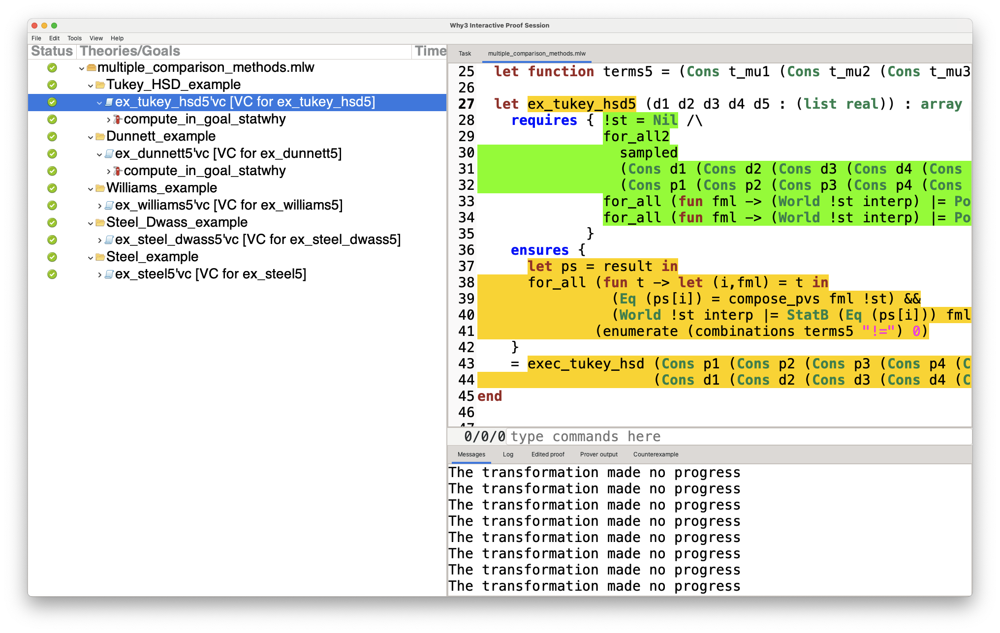

StatWhy is a software tool for automatically verifying the correctness of statistical hypothesis testing programs. In this file, we present the structure of this artifact, the resource requirements for the tool, and show how to verify the programs that implement the hypothesis testing examples addressed in our paper.
The structure of this artifact is as follows:
root/
├ README.md this file
├ install.sh installation script
├ cameleer source code of *cameleer*
│ └ statwhy source code of *statwhy*
│ ├ lib core library of statwhy, including the specification
│ │ of many hypothesis testing methods
│ └ ...
├ doc
│ └ Statwhy_User_Documentation.pdf user documentation of statwhy
├ examples codes for replicating the results
│ ├ executed log of executing the codes in `examples`
│ └ mlw examples not explained in this file
└ ...The ova file statwhy.ova for the StatWhy tool only runs
on systems with an x86_64 architecture. Other
architectures such as ARM are not supported. In addition, a system with
at least 8 GB of RAM and a 4-core CPU is recommended for optimal
performance in a virtual machine.
The tool StatWhy has been tested on the following environments:
We have provided the execution logs using the second environment at
examples/executed.
We have tested the tool StatWhy by (i) checking that StatWhy can correctly verify various major hypothesis testing methods in a short time in a way that is consistent with standard textbooks on statistics and (ii) proving various lemmas on the properties of epistemic logic (statELHT.mlw) and on those of hypothesis tests and belief Hoare logic (statBHL.mlw).
After extracting the ZIP file, boot the VM image
statwhy.ova using VirtualBox. When prompted to log in, use
the password statwhy.
The artifact is located on the Desktop of the VM. To access it, open a terminal and run:
cd ~/Desktop/statwhyAs an initial test, try running the one-sample t-test program by following the instructions in Example 1 below.
After the artifact evaluation, we have added several hypothesis tests and examples to the current version of StatWhy v.1.2.1. You have to install it from the source code by following the instructions in the User Documentation.
Alternatively, on Ubuntu 24.04.2 LTS, you can install StatWhy by running the following command: Run the following command:
source install.shDuring installation, you will be prompted to enter y or
n multiple times. Press y when prompted.
After installation, restart the machine or log in again to apply the
changes made to ~/.profile.
Move to the examples directory:
cd ~/Desktop/statwhy/examplesThis directory includes the examples for replicating the results of
this paper. The log of running these examples can be found in
examples/executed.
In Example 1, we provide a detailed explanation of how to use StatWhy. You can run the other examples analogously to Example 1; therefore we omit the details of instructions for Example 2 and later.
In this example, we demonstrate how to verify a program that conducts
a one-sample t-test, which is used to compare a population mean with a
specified value (shown in Section 3.1 in our paper). To verify the OCaml
program 1samp_t_test.ml, run the following command:
statwhy 1samp_t_test.mlThis will launch the Why3 IDE as follows:
There are two verification conditions (VCs) to be discharged:
example_1samp_t_test’vc (the VC for example_1samp_t_test)
and example_1samp_t_test_fail’vc (the VC for
example_1samp_t_test_fail). Right-click on the first goal
and select ‘StatWhy’ (Not ‘CVC5 1.2.0’ or the other
items), or press ‘4’ after selecting the goal to make StatWhy
try to discharge the goal. If the prover successfully verifies the goal,
a check mark will appear as follows.

The second goal, example_1samp_t_test_fail’vc, is similar to the
first except that the expression sampled d t_n is missing
from the requires-clause, i.e., the specification does not describe the
requirement that the data set d is sampled from a normally
distributed population. If this requirement is not satisfied, it is not
appropriate for us to use the t-test.
By running StatWhy, you can automatically detect that this requirement is missing in the annnotation of the program. In fact, if you press ‘4’ on example_1samp_t_test_fail’vc, StatWhy will fail to discharge the goal, as shown below. At this point, StatWhy generates sub-goals by applying transformations and attempts to prove them. By examining the results of the sub-goals, you can see which conditions are missing in the annotation of the program.

We emphasize that the above screenshot is the intended
result, in which several verification conditions are not
discharged due to the lack of the precondition. In the above screenshot,
the condition ppl @ d = NormalD ... fails to discharge,
which corresponds to the definition of the missing precondition
sampled d t_n.
To check the execution log we have prepared, run the following command:
statwhy executed/1samp_t_test.mlThis will load 1samp_t_test.ml and launch the Why3 IDE,
but you will notice that example_1samp_t_test'vc is
successfully discharged (showing a check mark) while
example_1samp_t_test_fail'vc has a subgoal that timed
out.
For the other examples below, you can check their pre-executed logs
in statwhy executed/[filename of example] in a similar
way.
In this example, we show that StatWhy can automatically check whether the p-values are correctly calculated and prevent p-value hacking (shown in Section 3.1 in our paper). Run the following command:
statwhy p_value_hacking.mlThe VC, ex_hack’vc, cannot be discharged; StatWhy
points out the p-value hacking in the code, which reports a lower
p-value (min p1 p2) than the actual one
(p1 + p2). This is implied by the fact that after applying
several transformations, Leq p = compose_pvs fmlA !st is
reduced to if p1 < p2 then p1 else p2 = p1 + p2, which
does not always hold:

On the other hand, ex_correct, where the p-value
p is correctly calculated as p1 + p2, can be
successfully discharged:

~/Desktop/statwhy/examples/execute/p_value_hacking/For details, see Section 6.3 of the User Documentation, specifically in the subsection ‘p-value hacking.’
In this example, we show a program that performs a multiple comparison, i.e., compares more than two groups in hypothesis testing (shown in Section 5 in our paper). Run the following command:
statwhy compare_with_existing_drugs.ml
The VC in this example cannot be immediately discharged, but StatWhy automatically splits this VC into smaller ones, applies computations and simplifications to them, and discharges them.
~/Desktop/statwhy/examples/execute/compare_with_existing_drugs/See Section 6 of the User Documentation for details.
In this example, we show a hypothesis testing program for practical numbers of disjunctive/conjunctive hypotheses (shown in Table 1 in our paper).
Run the following command:
statwhy multiple_hypotheses.mlwThere are two VCs in this example:
ex_six_hypotheses_disj and
ex_six_hypotheses_conj. Both of them consists of six
independent one-sample t-tests, but they differ in how each hypothesis
is combined. The former VC takes the disjunction of them, while the
latter takes the conjunction.

These two VCs cannot be immediately discharged, but StatWhy automatically splits these VCs into smaller ones and applies computations and simplifications to them. Finally, these sub-goals will be discharged by the prover.
~/Desktop/statwhy/examples/execute/multiple_hypotheses/multiple_hypotheses_full.mlwWe remark that the verification in a virtual machine takes more time compared to that on the host system (for creating Table 1). The execution times shown in Table 1 of our paper are the average values obtained by running each VC 10 times and measuring the times.
In this example, we show a program for popular multiple comparison methods for a practical number of groups (shown in Table 2 in our paper). Run the following command:
statwhy multiple_comparison_methods.mlwThe above code performs five kinds of multiple comparison methods (Tukey’s HSD test, Dunnett’s test Williams’ test, Steel-Dwass’ test, Steel’s test) when comparing five groups.

~/Desktop/statwhy/examples/execute/multiple_comparison_methods/multiple_comparison_methods_full.mlwWe remark that the verification in a virtual machine takes more time compared to that on the host system (for creating Table 2). The execution times shown in Table 2 of our paper are the average values obtained by running each VC 10 times and measuring the times.
See Section 6 of the User Documentation for details.
We have implemented various hypothesis testing methods not presented in the paper. For details, see the User Documentation.